Redis：（二）Redis集群
Redis集群
搭建一个高可用集群有以下内容：主从复制，哨兵模式，切片集群。
主从复制
虽然使用 AOF 和 RDB 可以保证持久化，但是如果单点暴毙了，那么两个持久化文件也就没有意义了。
因此，可以通过集群的方式，避免单点暴毙的问题。通过一主多从的集群方式，保证服务的可使用。
主从复制是 Redis 高可用服务的最基础的保证，实现方案就是将从前的一台 Redis 服务器，同步数据到多台从 Redis 服务器上，即一主多从的模式，且主从服务器之间采用的是「读写分离」的方式。
主服务器可以进行读写操作，当发生写操作时自动将写操作同步给从服务器，而从服务器一般是只读，并接受主服务器同步过来写操作命令，然后执行这条命令。
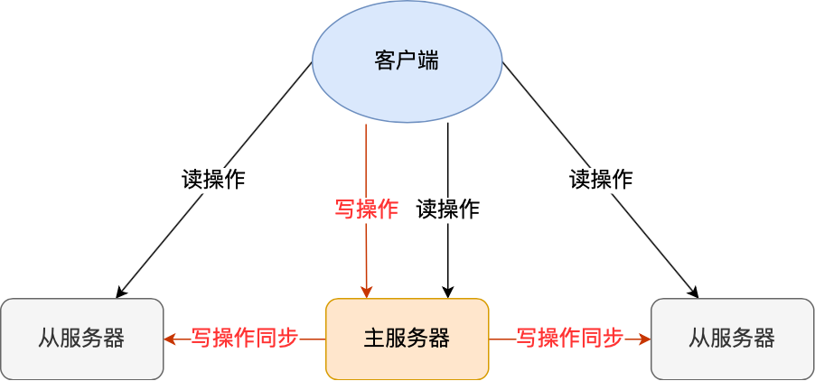
也就是说，所有的数据修改只在主服务器上进行，然后将最新的数据同步给从服务器，这样就使得主从服务器的数据是一致的。
注意，主从服务器之间的命令复制是异步进行的。所以，无法实现强一致性保证（主从数据时时刻刻保持一致），数据不一致是难以避免的。
全量同步：第一次同步
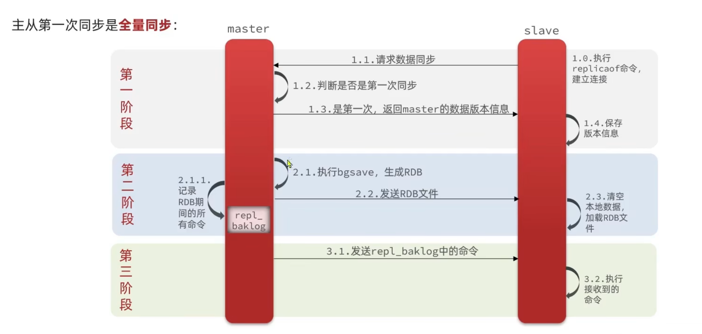
在第一阶段中，如何判断从节点是不是第一次同步？
执行了 replicaof 命令后，图中的1.1阶段请求数据同步，从服务器就会给主服务器发送 psync 命令，表示要进行数据同步。
psync 命令包含两个参数，分别是主服务器的 Replid 和复制进度 offset。
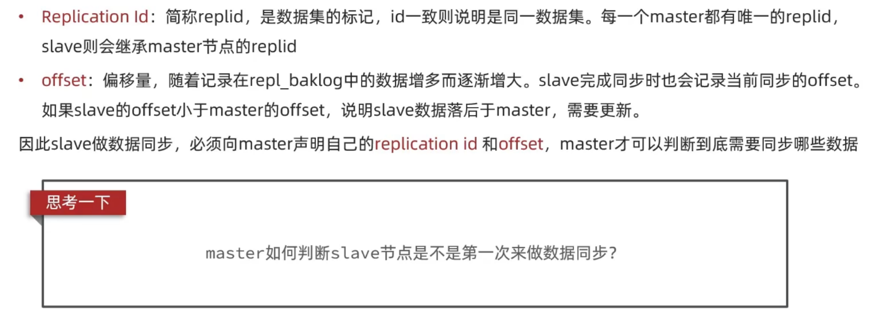
也就是说，如果从节点的replid和主节点的不一致，说明从节点是第一次和主节点进行数据同步的。
第二阶段中，使用的 RDB 快照文件为什么还需要repl_baklog日志（缓冲区）？
因为 RDB 持久化是异步操作，也就是说，主节点进行 RDB 快照的时候，仍然允许客户端进行写操作，然而 RDB 是快照文件，因此需要将打快照后新写的数据暂存在日志中，在第三阶段发送给从节点。
增量同步
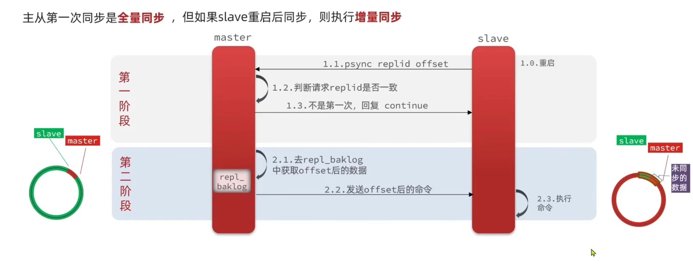
什么时候会进行增量同步？
比如从节点重启，由于暂时的网络波动，使得主节点和从节点断开，重连以后，只需要续写主节点中新增的命令就可以了。
续写规则是什么？
在全量复制中提到，repl_baklog 缓冲区是记录主节点生成 RDB 快照以后的数据，这个缓冲区实际上是一个环形的数据结构。
在图中，左边的环形就是repl_baklog 缓冲区。假设主节点打RDB快照以后，主节点在repl_baklog 缓冲区的数据写了一部分。那么从节点在恢复连接后，将根据offset 值（记录repl_baklog偏移量，说白了就是从节点复制主节点的时候复制到repl_baklog的哪了，继续复制），从repl_baklog 缓冲区中续写数据。图中圆环上的绿色和红色部分就是offset指向的地方，也就是说，从节点复制到这个位置了，继续顺时针方向把这个圆复制下去。
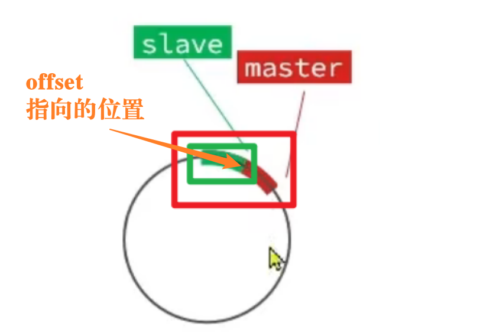
当圆形复制满一圈，但是从节点还有没有复制数据怎么办？
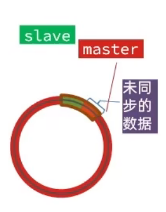
此时只能做全量复制了。
优化方案
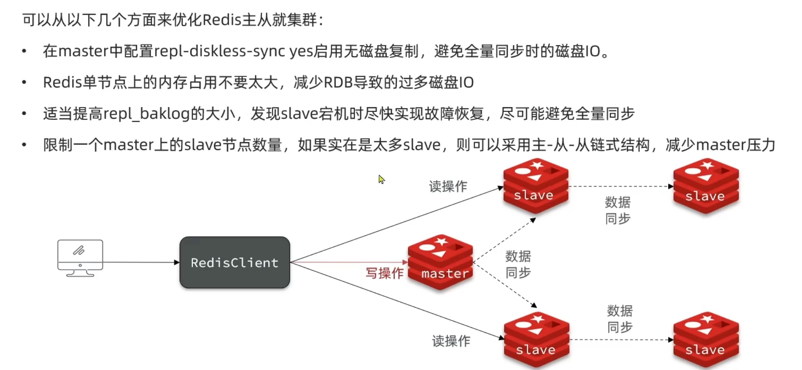
方案一采用网络传输的方式。因为 RDB 文件是写入磁盘的，然后从节点从磁盘拿到 RDB 文件，这个增加了磁盘IO。如果网络快的情况下可以使用网络传输，反之网络阻塞的情况下会更慢。
哨兵机制
在使用 Redis 主从服务的时候，会有一个问题，就是当 Redis 的主从服务器出现故障宕机时，需要手动进行恢复。
为了解决这个问题，Redis 增加了哨兵模式（Redis Sentinel），因为哨兵模式做到了可以监控主从服务器，并且提供主从节点故障转移的功能。
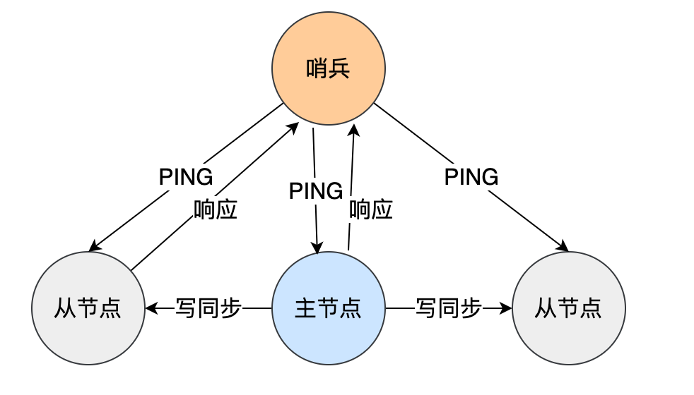
为什么要有哨兵机制？
在 Redis 的主从架构中，由于主从模式是读写分离的，如果主节点（master）挂了，那么将没有主节点来服务客户端的写操作请求，也没有主节点给从节点（slave）进行数据同步了。
哨兵其实是一个运行在特殊模式下的 Redis 进程，所以它也是一个节点。从“哨兵”这个名字也可以看得出来，它相当于是“观察者节点”，观察的对象是主从节点。为了实现监控功能，哨兵节点往往也会做成集群。
当然，它不仅仅是观察那么简单，在它观察到有异常的状况下，会做出一些“动作”，来修复异常状态。
哨兵节点主要负责三件事情：监控、选主、通知。
所以，我们重点要学习这三件事情：
- 哨兵节点是如何监控节点的？又是如何判断主节点是否真的故障了？
- 根据什么规则选择一个从节点切换为主节点？
- 怎么把新主节点的相关信息通知给从节点和客户端呢？
监控：主节点下线
监控就是哨兵节点对集群的实时监控，哨兵节点对于主节点下线的类型有两种：主观下线和客观下线。
主观下线
如果主节点和从节点在规定的时间内没有响应哨兵节点的 ping 命令，则这个哨兵节点认为主节点主观下线。这个「规定的时间」是配置项 down-after-milliseconds 参数设定的，单位是毫秒。
客观下线
客观下线只适用于主节点。
之所以针对「主节点」设计「主观下线」和「客观下线」两个状态，是因为有可能「主节点」其实并没有故障，可能只是因为主节点的系统压力比较大或者网络发送了拥塞，导致主节点没有在规定时间内响应哨兵的 PING 命令。
所以，为了减少误判的情况，哨兵在部署的时候不会只部署一个节点，而是用多个节点部署成哨兵集群（最少需要三台机器来部署哨兵集群），通过多个哨兵节点一起判断，就可以就可以避免单个哨兵因为自身网络状况不好，而误判主节点下线的情况。同时，多个哨兵的网络同时不稳定的概率较小，由它们一起做决策，误判率也能降低。
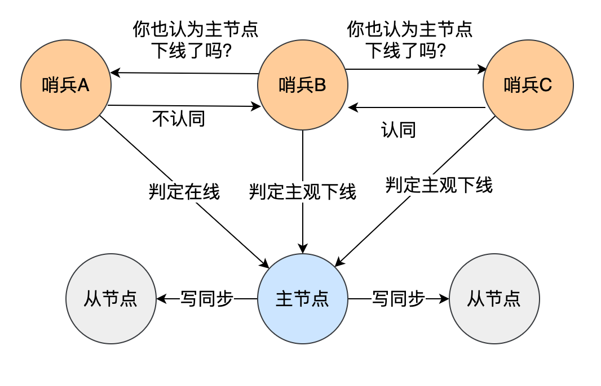
当一个哨兵节点判断主节点客观下线以后，会通过发布/订阅模式（下文介绍）与其他哨兵节点进行通信，询问它们是否也观察到相同的主节点不可达状态。如果同意发起主节点主观下线的哨兵节点，那么则【同意】这个哨兵节点的判断。当达到哨兵配置文件中quorum（法定人数）指定的哨兵节点数量都认为主节点为主观下线时，主节点会被标记为客观下线。
quorum 是一个关键参数，它决定了需要多少哨兵节点的同意才能确认主节点的客观下线状态。
选主：哨兵 Leader
由哪个哨兵进行主从故障转移？
进行主从故障转移的哨兵就是一个「Leader」，成为Leader之前还得是一个「候选者」。
成为候选者：
认为主节点主观下线的同时得的赞同票数达到一半以上且大于等于哨兵配置文件中quorum。
判断主节点主观下线的时候，只能是一个哨兵节点发起判断命令，候选者只能是一个节点吗？
不是的，并不是只能是一个哨兵节点发起判断命令。我们说过判断主观下线的时候有一个规定的时间，这个「规定的时间」是配置项
down-after-milliseconds参数设定的，单位是毫秒。那么在规定的时间内判断主节点主观下线的哨兵节点都可以成为候选者。
候选者如何选举成为 Leader：
候选者会向其他哨兵发送命令，表明希望成为 Leader 来执行主从切换，并让所有其他哨兵对它进行投票。
每个哨兵只有一次投票机会，如果用完后就不能参与投票了，可以投给自己或投给别人，但是只有候选者才能把票投给自己。
那么在投票过程中，任何一个「候选者」，要满足两个条件：
- 第一，拿到半数以上的赞成票；
- 第二，拿到的票数同时还需要大于等于哨兵配置文件中的 quorum 值。
每位候选者都会先给自己投一票，然后向其他哨兵发起投票请求。如果投票者先收到「候选者 A」的投票请求，就会先投票给它，如果投票者用完投票机会后，收到「候选者 B」的投票请求后，就会拒绝投票。这时，候选者 A 先满足了上面的那两个条件，所以「候选者 A」就会被选举为 Leader。
通知：主从故障转移
主从故障转移操作包含以下四个步骤：
第一步：在已下线主节点（旧主节点）属下的所有「从节点」里面，挑选出一个从节点，并将其转换为主节点。
第一轮考察：优先级最高的从节点胜出。
第二轮考察：复制进度最靠前的从节点胜出。
第二步：让已下线主节点属下的所有「从节点」修改复制目标，修改为复制「新主节点」。
当新主节点出现之后，哨兵 leader 下一步要做的就是，让已下线主节点属下的所有「从节点」指向「新主节点」，这一动作可以通过向「从节点」发送 SLAVEOF 命令来实现。
1 | redis-cli SLAVEOF 新主节点的IP地址 新主节点的端口号 |
第三步：将新主节点的 IP 地址和信息，通过「发布者/订阅者机制」通知给客户端；
通过 Redis 的发布者/订阅者机制来实现

客户端和哨兵建立连接后，客户端会订阅哨兵提供的频道。主从切换完成后，哨兵就会向 +switch-master 频道发布新主节点的 IP 地址和端口的消息，这个时候客户端就可以收到这条信息，然后用这里面的新主节点的 IP 地址和端口进行通信了。
通过发布者/订阅者机制机制，有了这些事件通知，客户端不仅可以在主从切换后得到新主节点的连接信息，还可以监控到主从节点切换过程中发生的各个重要事件。这样，客户端就可以知道主从切换进行到哪一步了，有助于了解切换进度。
第四步：继续监视旧主节点，当这个旧主节点重新上线时，将它设置为新主节点的从节点。
同样采用SLAVEOF 命令来实现。
设置从服务器：假设你有一个主服务器运行在 192.168.1.100 的 6379 端口上，你想将当前 Redis 实例设置为这个主服务器的从服务器，你可以执行：
1 | SLAVEOF 192.168.1.100 6379 |
发布者/订阅者模式
哨兵如何构成哨兵集群的？哨兵之间如何互相感知对方？
哨兵节点之间是通过 Redis 的发布者/订阅者机制来相互发现的。
在主从集群中，主节点上有一个名为__sentinel__:hello的频道，不同哨兵就是通过它来相互发现，实现互相通信的。
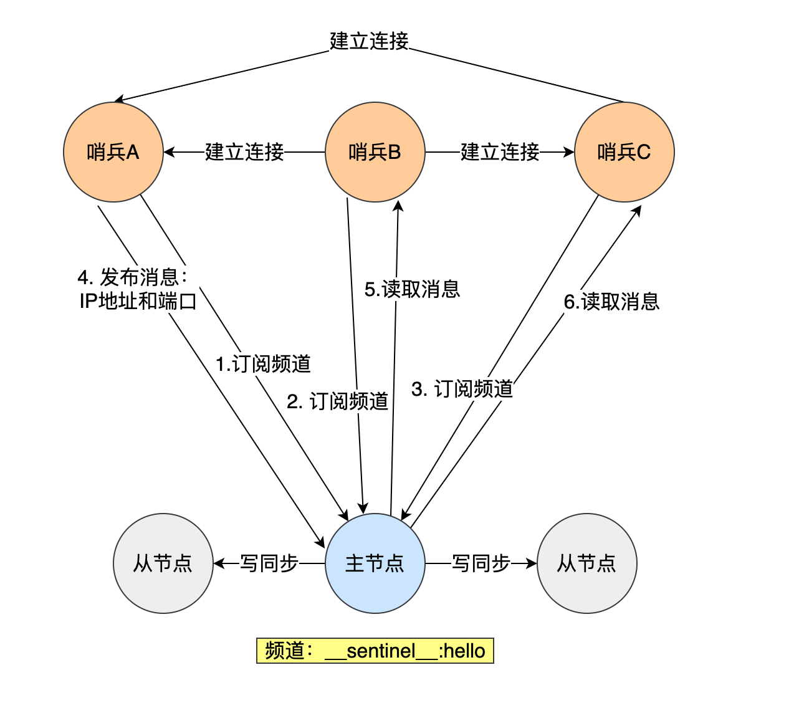
哨兵如何感知从节点？
在主观下线中提到，哨兵对主节点是通过PING命令感知主节点的。而哨兵对从节点的感知则是通过 INFO命令。
主节点知道所有「从节点」的信息，所以哨兵会每 10 秒一次的频率向主节点发送 INFO 命令来获取所有「从节点」的信息。
如下图所示，哨兵 B 给主节点发送 INFO 命令，主节点接受到这个命令后，就会把从节点列表返回给哨兵。接着，哨兵就可以根据从节点列表中的连接信息，和每个从节点建立连接，并在这个连接上持续地对从节点进行监控。哨兵 A 和 C 可以通过相同的方法和从节点建立连接。
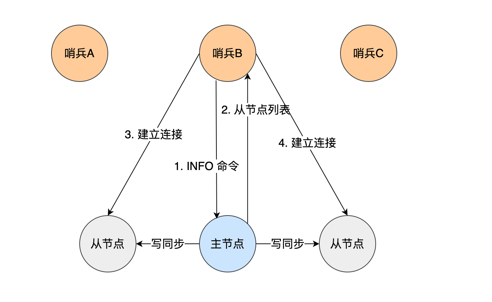
切片集群模式
当 Redis 缓存数据量大到一台服务器无法缓存时，就需要使用 Redis 切片集群（Redis Cluster ）方案，它将数据分布在不同的服务器上，以此来降低系统对单主节点的依赖，从而提高 Redis 服务的读写性能。
Redis Cluster 方案采用哈希槽（Hash Slot），来处理数据和节点之间的映射关系。在 Redis Cluster 方案中，一个切片集群共有 16384 个哈希槽，这些哈希槽类似于数据分区，每个键值对都会根据它的 key，被映射到一个哈希槽中，具体执行过程分为两大步：
- 根据键值对的 key，按照CRC16算法计算一个 16 bit 的值。
- 再用 16bit 值对 16384 取模，得到 0~16383 范围内的模数，每个模数代表一个相应编号的哈希槽。
接下来的问题就是，这些哈希槽怎么被映射到具体的 Redis 节点上的呢？有两种方案：
- 平均分配： 在使用 cluster create 命令创建 Redis 集群时，Redis 会自动把所有哈希槽平均分布到集群节点上。比如集群中有 9 个节点，则每个节点上槽的个数为 16384/9 个。
- 手动分配： 可以使用 cluster meet 命令手动建立节点间的连接，组成集群，再使用 cluster addslots 命令，指定每个节点上的哈希槽个数。
假设集群中有 2 个 redis 节点，哈希槽有 4 个（正常是16384），我采用手动分配的方式将slot 0，slot 1分配给 redis实例1 ，将slot 2，slot 3分配给 redis实例2：
1 | redis-cli -h 192.168.1.10 –p 6379 cluster addslots 0,1 |
此时插入方式如下：如果键通过CRC16算法然后对哈希槽个数（4）取余得到1 ，那么就将数据插入slot 1中，slot对应的是redis 实例1，其他哈希槽同理。

集群脑裂
在哨兵机制中提到，如果主节点被客观下线以后，哨兵节点（Leader）会重新选举一个从节点作为新的主节点。
假设如下场景：客户端和主节点连接正常，主节点和 redis 集群连接不正常，此时会发生什么？
客户端和主节点连接正常
此时客户端正常向主节点执行写操作和部分读操作。
主节点和 redis 集群连接不正常
主节点和 redis 集群之间可能发生网络波动，导致哨兵集群认为主节点客观下线，哨兵节点（Leader）会重新选举一个从节点作为新的主节点。
此时，选举出来的主节点和原来的主节点一共就有两个主节点了，这就是脑裂。
脑裂问题
之后网络波动的主节点恢复正常后，新的主节点则会把原来的主节点降为从节点，此时进行全量复制时，会清空之前客户端正常向网络波动的主节点执行写操作的数据，然后再进行全量复制这就是脑裂带来的问题。
解决方案
在 Redis 的配置文件中有两个参数我们可以设置：
- min-slaves-to-write x，主节点必须要有至少 x 个从节点连接，如果小于这个数，主节点会禁止写数据。
- min-slaves-max-lag x，主从数据复制和同步的延迟不能超过 x 秒，如果超过，主节点会禁止写数据。
通过指定这两个参数，使得旧的主节点无法写数据，让新的主节点上线时再进行写操作。